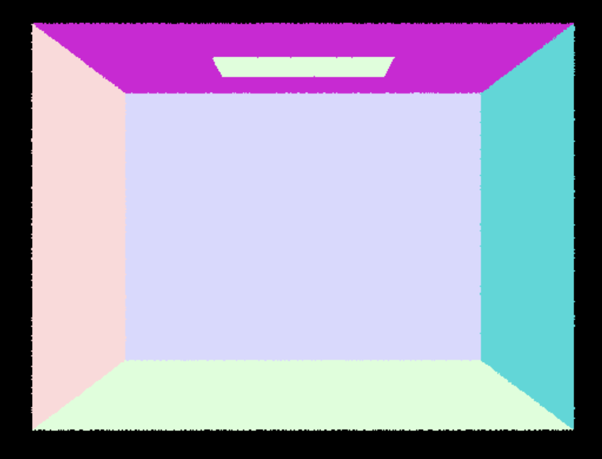
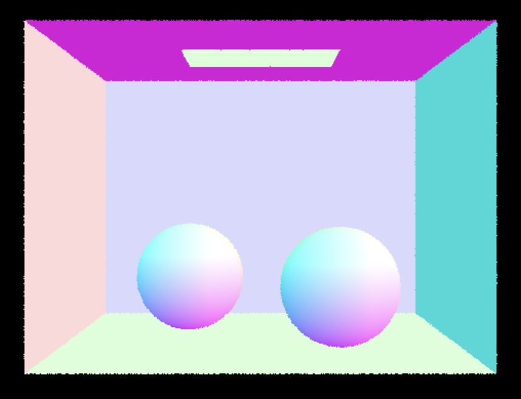
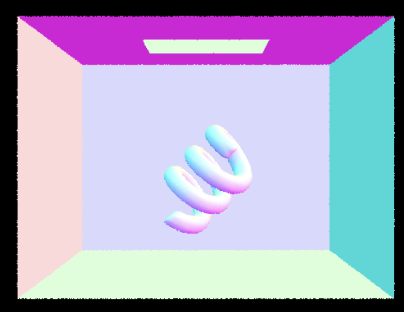
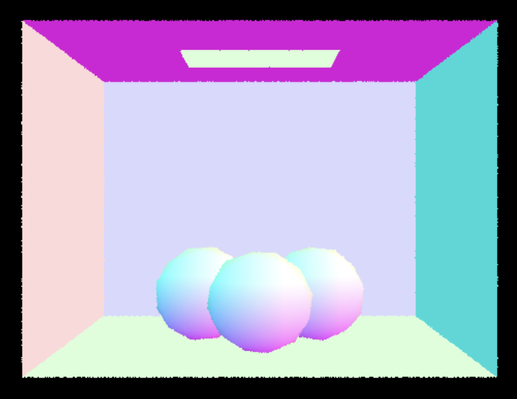
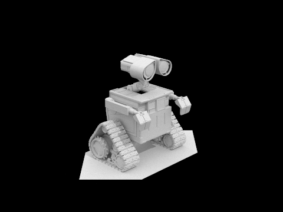
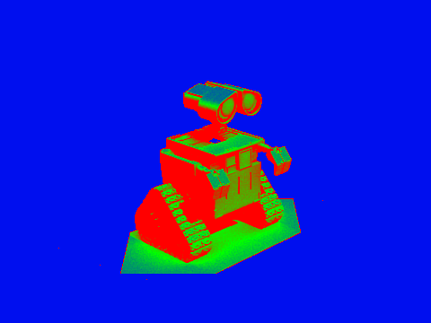
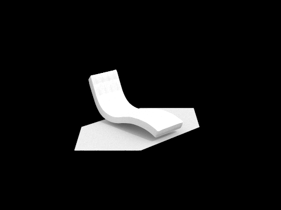
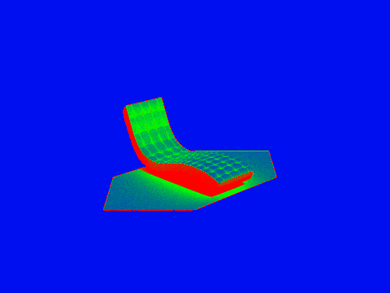
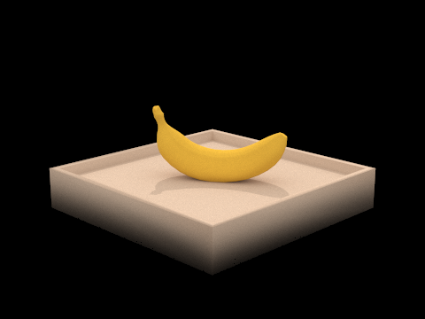
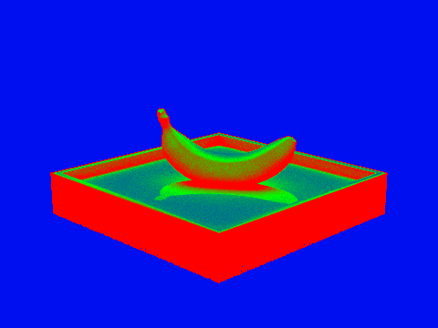

CS 184: Computer Graphics and Imaging, Spring 2024
Ian Dong
Overview
In this homework, I implemented a path tracing renderer. First, I worked on generating camera rays from image space
to sensor in camera space and their intersection with triangles and spheres. Then, I built a bounding volume
hierarchy to accelerate ray intersection tests and speed up the path tracers rendering. Afterwards, I explored
direct illumination to simulate light sources and render images with realistic shadowing. Then, I implemented global
illumination to simulate indirect lighting and reflections using diffuse BSDF. Finally, I implemented adaptive
sampling to reduce noise
in the rendered images.
 My bunny is the bounciest bunny
My bunny is the bounciest bunny
|
Section I: Ray Generation and Scene Intersection (20 Points)
Walk through the ray generation and primitive intersection parts of the rendering pipeline.
For the ray generation portion of the rendering pipeline, I first made sure to find the boundaries of the
camera space by calculating \(\text{tan}(\frac{\text{hFov}}{2})\) and \(\text{tan}(\frac{\text{vFov}}{2})\) since
the bottom left corner is defined as (\(-\text{tan}(\frac{\text{hFov}}{2})\), \(\text{tan}(\frac{\text{vFov}}{2})
-1\)) and the top right corner is defined as (\(\text{tan}(\frac{\text{hFov}}{2})\),
\(\text{tan}(\frac{\text{vFov}}{2}), -1\)). Then, I used the instance variables hFov and vFov which are in degrees to
calculate the height and width length before using linear interpolation to find the camera image coordinates.
Afterwards, I used this->c2w to convert my camera image coordinates into
world space coordinates and also normalized the direction vector. Finally, I constructed the ray with this vector
and defined the min_t and max_t.
For the primitive intersection portion of the rendering pipeline, I generated num_samples using this->gridSampler->get_sample(). I made sure to normalize the coordinates
before calling on the previously implemented method to generate the ray. Finally, I called this->est_radiance_global_illumination() to get the sample radiance and
averaged
the radiance to update the pixel in the buffer.
Explain the triangle intersection algorithm you implemented in your own words.
For the ray-triangle intersection, I implemented Moeller-Trumbore algorithm.
Show images with normal shading for a few small .dae files.
Here are some screenshots of the .dae files rendered with normal shading:

CBempty.dae
|

CBspheres.dae
|

CBcoil.dae
|

CBgems.dae
|
Section II: Bounding Volume Hierarchy (20 Points)
Walk through your BVH construction algorithm. Explain the heuristic you chose for picking the splitting point.
YOUR RESPONSE GOES HERE
Show images with normal shading for a few large .dae files that you can only render with BVH acceleration.
 example1.dae
example1.dae
|
example2.dae
|
|
example3.dae
|
example4.dae
|
Compare rendering times on a few scenes with moderately complex geometries with and without BVH acceleration.
Present your results in a one-paragraph analysis.
YOUR RESPONSE GOES HERE
Section III: Direct Illumination (20 Points)
Walk through both implementations of the direct lighting function.
YOUR RESPONSE GOES HERE
Show some images rendered with both implementations of the direct lighting function.
|
Uniform Hemisphere Sampling
|
Light Sampling
|
|
example1.dae
|
example1.dae
|
|
example2.dae
|
example2.dae
|
Focus on one particular scene with at least one area light and compare the noise levels in soft shadows
when rendering with 1, 4, 16, and 64 light rays (the -l flag) and with 1 sample per pixel (the -s flag) using
light sampling, not uniform hemisphere sampling.
|
1 Light Ray (example1.dae)
|
4 Light Rays (example1.dae)
|
|
16 Light Rays (example1.dae)
|
64 Light Rays (example1.dae)
|
YOUR EXPLANATION GOES HERE
Compare the results between uniform hemisphere sampling and lighting sampling in a one-paragraph analysis.
YOUR RESPONSE GOES HERE
Section IV: Global Illumination (20 Points)
Walk through your implementation of the indirect lighting function.
YOUR RESPONSE GOES HERE
Show some images rendered with global (direct and indirect) illumination. Use 1024 samples per pixel.
|
example1.dae
|
example2.dae
|
Pick one scene and compare rendered views first with only direct illumination, then only indirect illumination.
Use 1024 samples per pixel. (You will have to edit PathTracer::at_least_one_bounce_radiance(...) in your code to
generate these views.)
|
Only direct illumination (example1.dae)
|
Only indirect illumination (example1.dae)
|
YOUR EXPLANATION GOES HERE
Pick one scene and compare rendered views with various sample-per-pixel rates, including at least 1, 2, 4, 8,
16, 64, and 1024. Use 4 light rays.
|
1 sample per pixel (example1.dae)
|
2 samples per pixel (example1.dae)
|
|
4 samples per pixel (example1.dae)
|
8 samples per pixel (example1.dae)
|
|
16 samples per pixel (example1.dae)
|
64 samples per pixel (example1.dae)
|
|
1024 samples per pixel (example1.dae)
|
YOUR EXPLANATION GOES HERE
Section V: Adaptive Sampling (20 Points)
Explain adaptive sampling. Walk through your implementation of the adaptive sampling.
YOUR RESPONSE GOES HERE
Pick two scenes and render them with at least 2048 samples per pixel. Show a good sampling rate image with
clearly visible differences in sampling rate over various regions and pixels. Include both your sample rate
image, which shows your how your adaptive sampling changes depending on which part of the image you are
rendering, and your noise-free rendered result. Use 1 sample per light and at least 5 for max ray depth.
Here are the rendered and their sample rate images through adaptive sampling:

Rendered image (wall-e.dae)
|

Sample rate image (wall-e.dae)
|

Rendered image (bench.dae)
|

Sample rate image (bench.dae)
|

Rendered image (banana.dae)
|

Sample rate image (banana.dae)
|